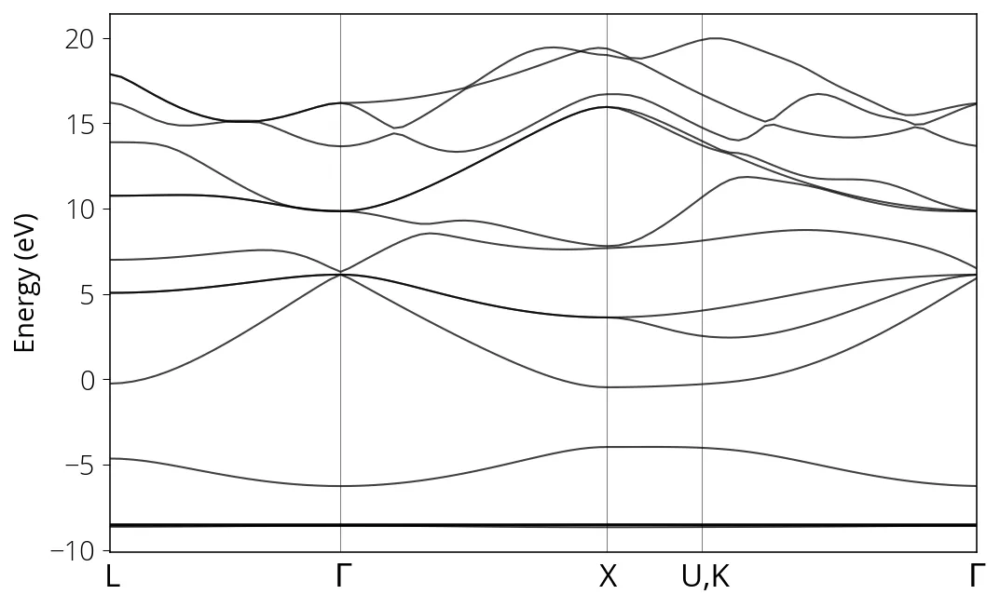

GaAs
Depois de calcular a estrutura de bandas do silício (semicondutor) e do alumínio (metal), vamos a um composto com dois átomos diferentes. Seguimos os mesmos passos de antes:
Primeiro verifique a constante de rede com uma relaxação de célula para o pseudopotencial escolhido. Usaremos essa constante de rede nas próximas etapas. A constante de rede obtida = 10,6867 × 0,508176602 / 0,5 = 10,861462.
pw.x < pw.relax.GaAs.in > pw.relax.GaAs.outFaça o cálculo autoconsistente:
pw.x < pw.scf.GaAs.in > pw.scf.GaAs.outUse uma malha de pontos k mais densa e faça o cálculo não autoconsistente. Essa etapa só é necessária se você quiser a densidade de estados.
pw.x < pw.nscf.GaAs.in > pw.nscf.GaAs.outFaça o cálculo bands
pw.x < pw.bands.GaAs.in > pw.bands.GaAs.outPós-processe os dados e faça o gráfico da estrutura de bandas.
bands.x < pp.bands.GaAs.in > pp.bands.GaAs.outSe tudo correr bem, você obterá a estrutura de bandas abaixo:

Às vezes um cálculo com os mesmos inputs converge em um computador e falha em outro, por causa da configuração das bibliotecas ou até de aproximações de ponto flutuante. Os números finais sempre variam um pouco entre máquinas diferentes, ou mesmo entre execuções na mesma máquina. Para reprodutibilidade, verifique também a versão do Quantum ESPRESSO.
Veja também a estrutura de bandas do GaAs com SOC.